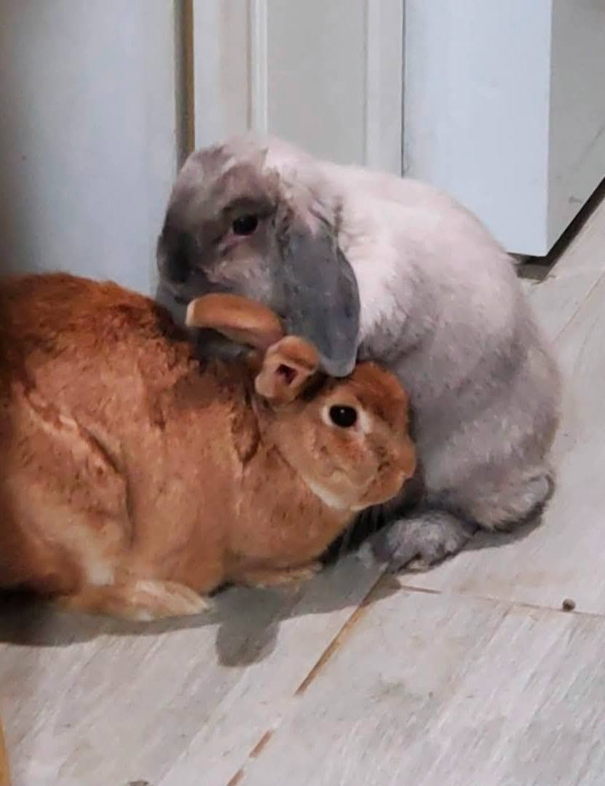
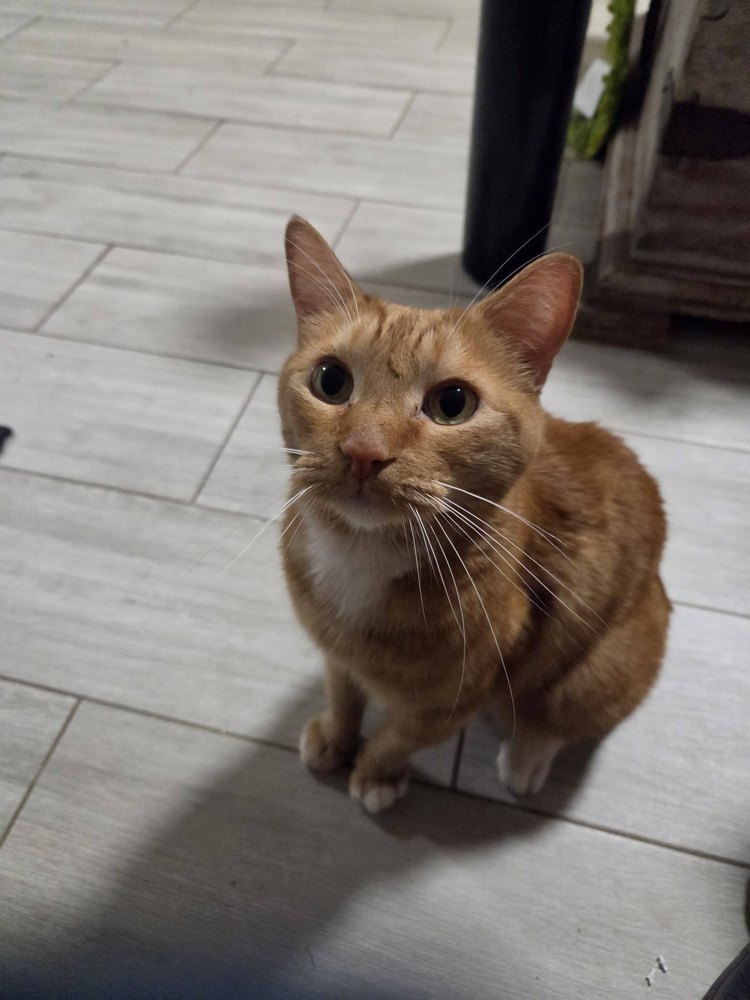
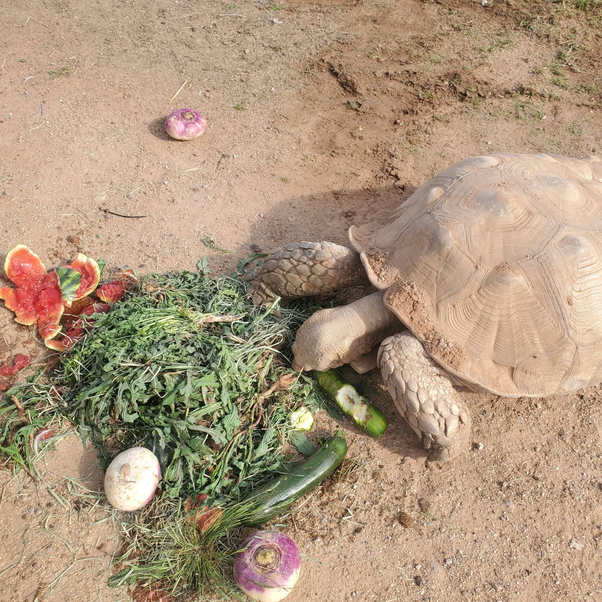

Dog
Daisy
Daisy came to Crystal's Critter Haven needing time to feel safe again. She is affectionate, attentive, and ready for a patient home.
Ask about Daisy →Thoughtful matches • lasting homes
Crystal's Critter Haven places healthy, eligible animals in homes suited to their individual needs.
Looking for a home
Dog
Daisy came to Crystal's Critter Haven needing time to feel safe again. She is affectionate, attentive, and ready for a patient home.
Ask about Daisy →
Bearded Dragon
Sunny is calm, curious, and looking for a home prepared to provide appropriate lighting, habitat, and species-specific care.
Ask about Sunny →
Domestic Duck
Puddles is social and curious. An appropriate home will provide secure outdoor housing, safe water access, and suitable companionship.
Ask about Puddles →
Guinea Pig
Pip is gentle and enjoys fresh greens, cozy hiding places, and a predictable indoor routine.
Ask about Pip →
Bonded Rabbit Pair
These gentle companions are closely bonded and must be adopted together into a safe indoor home.
Ask about the pair →
Cat
Marmalade is bright, affectionate, and ready for a home that appreciates a curious companion.
Ask about Marmalade →
Tortoise
Juniper needs a knowledgeable home with secure outdoor space, proper shelter, and a species-appropriate diet.
Ask about Juniper →Good nutrition makes a difference
DubiaRoaches.com generously provides feeder insects for reptiles in Crystal's Critter Haven's care, helping support species-appropriate nutrition.